|

資料表元件 (Grid component)

共同屬性 (common properties)
資料來源與資料表屬性 (data source and grid properties)
資料表欄位
(Grid columns)
定義資料表欄位 (define grid columns)
欄位屬性 (column properties)
編輯方塊屬性
(Edit properties)
核取方塊屬性
(Checkbox properties)
下拉式清單方塊屬性
(Combobox properties)
運算式欄位屬性
(Formula column properties)
按鈕欄位元件屬性 (Button
properties)
進階 (advance)
資料表的編輯、新增、刪除控制
(Grid update, insert and delete control)
動態欄位顏色控制
(dynamically column color control)
資料表的鍵盤操作
(Grid keyboard function)
資料表欄位表頭字型與顏色
(Grid head column font and color)
讀取和設定資料表目前所選的欄列
(Get and set selected column and row)
運算式屬性存取
(formula get/set properties)
資料表元件(Grid component) 連結資料來源
(data source)
，使用於資料記錄瀏覽及資料維護。設計師選取資料來源(data
source) 的資料欄位 (data field) 組合成資料表元件的欄位 (Grid column)，並根據作業需求可以選擇以編輯元件(Edit)、核取方塊(Checkbox)、下拉式清單方塊(Combobox)
操作欄位資料外，尚可加入衍生(derivative) 的運算式欄位
(formula field) 及啟動事件的按鈕欄位(Button field)。參閱 定義資料表欄位
(define grid columns)。
資料表(Grid)
與連結的資料來源 (data source) 是同步運作 (synchronized)
，資料表隨時反應資料來源的狀態，其中資料表以選取顏色表示的選取列
(Selected row)， 即是目前資料記錄所在的位置 (record position)；以內定灰色表示的資料列代表已刪除的資料記錄列
(deleted record row)，使用者不可選取亦不可編輯已刪除的資料記錄列；新增資料列
(inserted row)
則位於資料表的最後一列；設計師可以提供使用者呼叫重新開啟(reopen) 或查詢
(query)
資料來源的功能，資料表將會重整，並將已刪除的資料記錄排除。
資料表選取列改變
(selected row change)、編輯 (update)、新增 (insert) 及刪除 (delete)
的操作，會引發 (Fire)
相對的資料來源讀取、編輯、新增、刪除前後事件 (before and
after event)。
資料表是虛擬模式
(virtual mode)的元件，資料來源 (data source) 的檔案記錄 (record) 在初始時，並不會全部讀入資料表中，而是將客戶端
(client) 目前資料來源緩衝區 (buffer) 的檔案記錄讀入，當使用者以捲動軸瀏覽或資料欄位不在緩衝區
(buffer) 且資料來源尚未至檔尾 (EOF)
時，資料表會以背景執行緒按資料來源的擷取記錄數 (row fetch)，讀入檔案記錄
(record) 至資料表中。
設計師可以運用衍生
(derivative) 的運算式欄位 (formula field)，將運算的結果值顯示於資料表欄位中；以動態欄位顏色控制
(dynamically column color control)，顯示不同欄位資料值不同的前背景顏色；以資料表編輯、新增、刪除控制
(Grid update, insert and delete control)，控管使用者操作資料表的流程與權限。
資料來源與資料表屬性 (data
source and grid
properties)
-
資料來源 (data source)：選取資料來源。
-
訊息
(prompt confirm message) ：當使用者新增 (insert) 或更改
(update) 資料後，資料表元件 Lost Focus 或
點選其他資料表列，系統會出現確認訊息 (confirm message)
視窗，使用者可決定是確認或回復原值。若未選用此屬性，元件將自動存檔。
-
允許 (permit)：允許新增、編輯、刪除的屬性，資料表所連結的資料來源必須是非唯讀
(read only) 狀態時才有作用。參閱 資料表的編輯、新增、刪除控制
(Grid update, insert and delete control)。
-
新增 (insert)：可以由資料表元件上新增
(insert) 一筆資料列 (row)。
-
編輯 (update)：可以由資料表元件上編輯
(update) 一筆資料列 (row)。
-
刪除 (delete)：可以從資料表元件上刪除
(delete) 一筆資料列 (row)。
-
資料表元件格線 (grid lines)：
-
資料表元件顏色 (row color)：資料表列
(Row) 背景顏色。參閱 動態欄位顏色控制
(dynamically column color control)。
-
選擇顏色 (selected row color)：被選取列
(Selected row) 的顏色。參閱 動態欄位顏色控制
(dynamically column color control)。
-
捲軸 (scroll bar)：
-
自動調整欄寬
(auto resize)：設計師可以在每個欄位設定中，給定初始欄位寬或選取大小符合寬度的屬性，再配合自動調整欄寬，控制初始及使用者改變欄寬時，其他欄寬相對的大小變化。
不重調大小
(resize off)：資料表根據每個欄位的寬度設定顯示欄位，使用者改變欄寬時，不影響其他欄位。當所有欄位寬度總合大於資料表
(Grid) 時將出現水平捲軸 (horizontal scroll bar)。
重調下一個欄位
(resize_next_column)：初始顯示時，所有欄位將根據設定的大小，按比例重調寬度至所有欄位顯示於資料表中且不出現水平捲軸
(horizontal scroll bar)。當使用者改變一欄位寬度時，其下一個欄位寬亦隨之改變，以符合資料表總寬度。
-
重調隨後的欄位 (resize_subsequent_columns)：初始顯示時，所有欄位將根據設定的大小，按比例重調寬度至所有欄位顯示於資料表中且不出現水平捲軸
(horizontal scroll bar)。當使用者改變一欄位寬度時，其隨後的每個欄位寬亦隨之改變，以符合資料表總寬度。
-
重調最後欄位 (resize_last_column)：初始顯示時，所有欄位將根據設定的大小，按比例重調寬度至所有欄位顯示於資料表中且不出現水平捲軸
(horizontal scroll bar)。當使用者改變一欄位寬度時，最後一個欄位寬亦隨之改變，以符合資料表總寬度。
-
重調全部欄位 (resize_all_columns)：初始顯示時，所有欄位將根據設定的大小，按比例重調寬度至所有欄位顯示於資料表中且不出現水平捲軸
(horizontal scroll bar)。當使用者改變一欄位寬度時，其他所有的欄位寬亦隨之改變，以符合資料表總寬度。
-
CellRect：
-
列顏色 (row color)：設定奇偶數列的顏色。參閱
動態欄位顏色控制
(dynamically column color control)。
-
奇數列顏色 (odd row color)：
-
偶數列顏色 (even row color)：
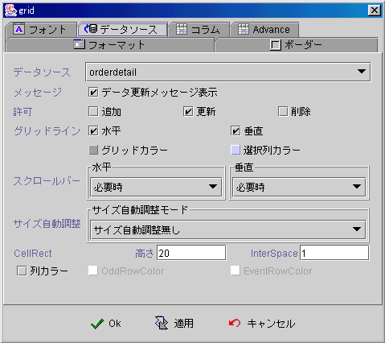
▲Top
資料表欄位 (Grid columns)
定義資料表欄位 (define grid columns)
欄位屬性 (column properties)
編輯方塊屬性
(Edit properties)
核取方塊屬性
(Checkbox properties)
下拉式清單方塊屬性
(Combobox properties)
運算式欄位屬性
(Formula column properties)
按鈕欄位元件屬性 (Button
properties)
定義資料表欄位 (define grid columns)
選定連結資料來源 (data source)
而不定義相關資料表欄位 (Grid columns) 時，系統預設將資料來源所有欄位
(record field)，依序加入資料表中，並以預設欄位型別 (default grid type) 顯示。
在欄位
(column) 屬性設定頁中，設計師可按需求將資料來源的欄位
(record field)
選入資料表中，並安排在資料表出現的次序。除了資料來源的欄位
(record field) 外，設計師可以加入衍生的 (derivative)
運算式欄位 (Formula column) 及按鈕欄位 (Button column)。運算式欄位
(Formula column)
以運算結果顯示資料，適用於多個資料來源的欄位 (record
field) 計算衍生的結果，例如：數量欄位 * 單價欄位 *
折扣欄位 ，顯示單筆的小計，或將結果值解譯為圖檔名稱
(image file name) 並將欄位以圖像 (image) 顯示；按鈕欄位 (Button column)
則適用於該列資料紀錄的事件啟動(fire event)。
每個資料表欄位
(grid column) 可以滑鼠雙擊或按編輯按鈕，定義其屬性。資料表欄位的屬性除了可以設定外框、字型、欄位大小、前背景顏色、是否可編輯、各式啟動事件外，
設計師可以根據連結的資料欄位(record field)，選擇以編輯元件(Edit)、核取方塊
(Checkbox)、下拉式清單方塊 (Combobox)
作為編輯 (Edit) 控制資料的元件，依選擇元件之不同，系統會出現相關之屬性設定頁。
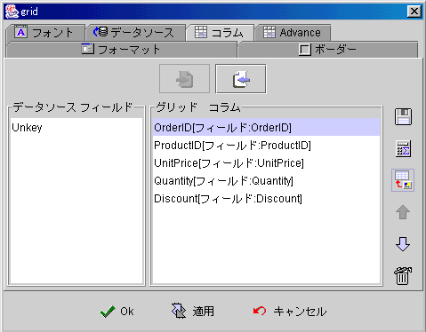
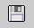
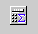

欄位屬性
(column properties)
-
欄位 (column)：
-
欄位名稱 (column Name)：欄位表頭說明文字
(column head title)。
-
欄位可編輯 (editable)：是否允許編輯。參閱
資料表的編輯、新增、刪除控制
(Grid update, insert and delete control)。
-
自動切換輸入法 (enable input method)：如果是編輯方塊元件或可編輯下拉式清單方塊，Focus
移入此欄位編輯時，自動顯示切換為，使用者作業系統目前所使用的輸入法
(input method)。
-
Render Cell As：資料表進入編輯模式
(edit mode) 時，以下列元件編輯資料
-
文字編輯方塊 (Edit)
-
核取方塊 (Checkbox)
-
下拉式清單 (Combobox)
-
按鈕元件 (Button)
-
值變事件 (changed event)：當欄位內含值改變時，啟動事件。
-
雙擊 (double click event)：當滑鼠在欄位上雙擊滑鼠左件時，啟動事件。
-
按右鍵 (right click)：當滑鼠在欄位上按滑鼠右鍵時，啟動事件。
-
欄位提示 (column tips)：當滑鼠移到欄位上時，出現的提示字串。
-
欄寬：欄位寬度
-
外框顏色：選擇外框顏色。
-
外框：外框式樣。
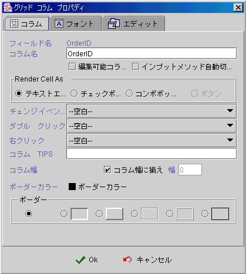
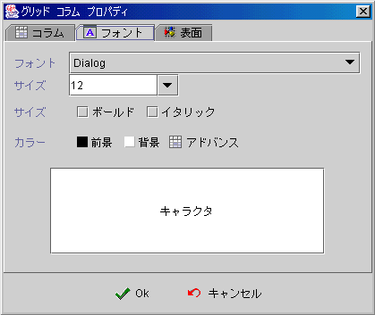
-
使用預設驗證 ：
-
資料類別 ：根據資料連結
(data
binding) 的欄位型別 (field type) 或運算公式 (formula)
的結果值類別，選擇要被格式化 (format) 的類別。
-
讀取格式樣板 ：選擇顯示的格式樣版
(format pattern) 或自行編輯輸入格式樣版。參閱 格式樣版編輯
(format
pattern)。
-
編輯格式樣板 ：選擇編輯的格式樣版
(format pattern) 或自行編輯輸入格式樣版。參閱 格式樣版編輯
(format pattern)。
-
限制字串長度 ：限制輸入文字的長度。
-
民國曆年：是否以中華民國的日期顯示日期。
-
對齊：選擇對齊方式。
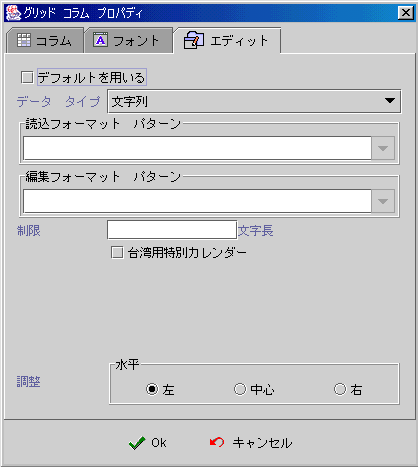
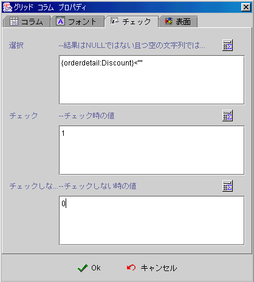
-
核取方塊的版面 (face)：
-
文字 (text)：核取方塊的說明文字。
-
水平 (text horizontal position)：文字與核取圖示
(icon) 的水平相對位置。
-
垂直 (text vertical position)：文字與核取圖示
(icon) 的水平相對位置為中 (center) 時， 文字與核取圖示 (icon)
的垂直相對位置。
-
不核取時顯示 (unchecked icon)：核取方塊的不核取
(unchecked) 狀態的顯示圖示 (icon)。
-
核取時顯示 (checked icon)：核取方塊的核取
(checked) 狀態的顯示圖示 (icon)。
-
滑鼠滑過時 (roll over icon)：當滑鼠移到核取方塊上，核取方塊是不核取
(unchecked) 狀態時會改變為此圖示。
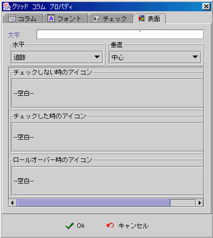
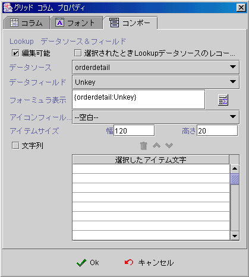
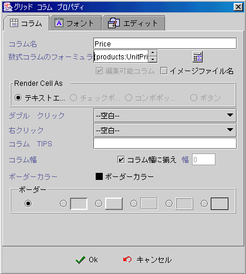
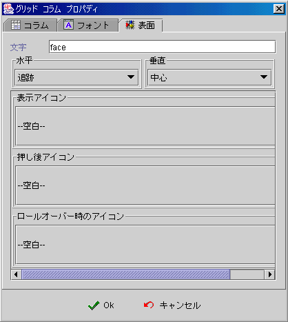
▲Top
進階 (advance)
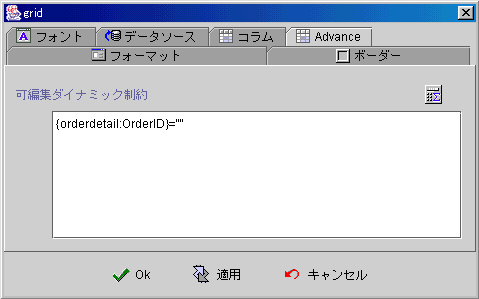
▲Top
資料表的編輯、新增、刪除控制
(Grid update, insert, and delete control)
資料表元件
(Grid component) 連結資料來源 (data source)，對於欄位的編輯
(update) 及資料列的新增(insert)、刪除 (delete)，除了與資料來源的開啟屬性
(open) 有關外，還有優先次序性 (priority) 的許可 (permit)
檢核，控管使用者對資料表的編輯 (update) 新增 (insert) 與刪除
(delete)
操作。以下為資料表 (Grid) 許可 (permit)
檢核的程序，優先次序性 (priority) 在前的檢核為不允許 (not
permit) 時，該操作即為不允許狀態。
-
運算式欄位
(Formula column) 不可編輯。
-
連結的資料來源
(data source) 為唯讀狀態 (read only)，則所有欄位不可編輯
(update)，資料表不可新增 (insert)、刪除 (delete) 資料列 (row)。
-
授權式安全機制
(authorized security control)，對於目前的登入使用者 (login
user) 是否授予 (grant) 資料表所在視窗 (form)
的編輯、新增、刪除權限。
-
資料表屬性
(Grid properties) 設定中，是否允許編輯、新增、刪除。
-
各別欄位屬性
(column properties) 的可編輯屬性
(editable) 是否核取 (checked)。
-
可編輯動態限制
(dynamically editable
control) 的運算式 (formula)
結果值，是否允許編輯
(update)
所選儲存格 (selected cell) 。
設計師可以在靜態
(static) 的資料表屬性 (Grid properties) 中，設定資料表是否允許編輯
(update)、新增(insert)、刪除 (delete)。亦可在欄位屬性 (column
properties) 中設定欄位是否可以編輯 (update)，而在程式執行期
(run time) 時可以使用運算式的 SetProp("資料表元件名稱",
"allowupd", " 1 或 0")、
SetProp("資料表元件名稱",
"allowins", " 1 或 0")
、SetProp("資料表元件名稱",
"allowdel", " 1 或 0")
按事件流程，變更資料表的編輯、新增、刪除許可。
應用程式如果需要動態 (dynamic) 的控制每一個儲存格
(cell) 的編輯，設計師必須使用可編輯動態限制(dynamically
editable control)
的運算式，按在各種的條件下，回應系統目前所選的儲存格
(selected cell) 是否允許編輯。
應用程式系統管理者，在程式執行期
(run time) 時，可以以授權管理模組，按使用者的職
務權限，分別授予或變更使用者的編輯、新增、刪除權限。
▲Top
動態欄位顏色控制
(dynamically column color control)
資料表儲存格
(cell) 的前背景顏色 (foreground and background
color)，是由以下的屬性所控制
-
資料表元件顏色
(Grid component color)。
-
選取列顏色
(selected row color)。
-
奇、偶數列顏色
(odd and even row color)。
-
欄位前背景顏色設定
(column color setting)。
-
動態欄位顏色控制運算式
(dynamical column color formula)。
其中動態欄位顏色控制運算式
(dynamical column color formula)
的設定頁，是在資料表欄位設定的【字型】設定頁中，設計師按選
(clicked) 進階的按鈕，動態顏色設定頁將會開啟。設計師可以設定前景與背景的顏色運算式
(formula)，顏色運算式 (formula)
與一般運算式完全相同，所須注意的是最後的回應值 (return
value) 必須是由 RGB(red, green, blue)
所運算的結果值。動態欄位顏色控制，由於每次的重繪
(repaint)
都會重新計算運算式，所以會影響資料表元件重繪的效率。
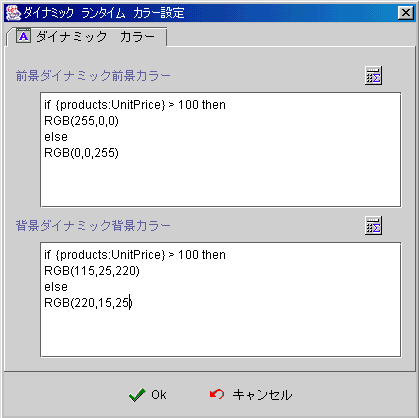
▲Top
資料表的鍵盤操作
(Grid keyboard function)
資料表元件
(Grid component) 是繼承自 Java™ swing JTable，預設的鍵盤操作可以參閱
Java™ JTable 元件的 Key-assignment ，由於資料表是連結資料來源運作的元件，所以屬於
Block 和 Extend selection
的操作是無效的。資料表元件是處於瀏覽模式，使用者可以滑鼠按選儲存格
(cell) 進入編輯模式，相對的鍵盤操作則使用 F2
鍵 (edit cell without overriding current contents)。
為便利於資料表資中操作資料來源，資料表元件加入新增資料列
(insert new row) ：CTRL+INS 和 刪除資料列
(delete row)：CTRL+DEL
的鍵盤操作。其他資料表中的欄位元件，參閱
編輯欄位(Java™ JTextField)、核取方塊欄位
(Java™ JCheckBox)、下拉式清單方塊欄位
(Java™ JComboBox)、J按鈕欄位(Java™ JButton) 文件說明。
▲Top
資料表欄位表頭字型與顏色
(Grid head column font and color)
資料表元件
(Grid component)
共同屬性的字型設定頁，其設定的字型與前背景顏色是使用者於欄位表頭
，因為資料表儲存格 (cell) 的字型與顏色是由其他設定屬性所決定。參閱
動態欄位顏色控制
(dynamically column color control)。
▲Top
讀取和設定資料表目前所選的欄列
(get and set selected column and row)
資料表(Grid
component)
是連結資料來源 (data source)
的元件，資料表會隨時與連結資料來源同步，亦即資料表目前所選取的資料列
(selected row) 正是資料來源的資料記錄 (record)，以數值來計，從
1 起算，資料表 (Grid)所選取資料列數 (row number)
等於資料來源的資料記錄 (record number)，所以設計師可以使用資料來源的運算式
{資料來源名稱:RecordNo()}，讀取目前的資料表選取列值
(selected
row)。而操作導灠元件 (Navigator component)
時，亦會引起資料表選取資料列 (selected row) 的改變。
設計師可以使用運算式
(formula)，讀取與設定資料表目前選取的欄 (selected column) 列(selected
row) (從 1 起算)：
GetProp("資料表元件名稱",
"selcol") ：傳回目前所選的欄數
(column number)。
GetProp("資料表元件名稱",
"selrow") ：傳回目前所選的列數
(row number)。
SetProp("資料表元件名稱",
"selcol", column_no)：設定資料表選取欄
(column_no)。
SetProp("資料表元件名稱",
"selrow", row_no) ：設定資料表選取列
(row_no)。
以
SetProp() 改變資料表的選取欄列 (selected row and column)，如果列值改變
(row change) 會引發連結資料來源 (data source) 的讀取前後事件。
▲Top
運算式屬性存取
(formula get/set properties)
SetProp("元件名稱",
"屬性", 值) ：屬性設定。
SetProp("元件名稱",
"屬性", 值1, 值2)：屬性設定。
GetProp("元件名稱",
"屬性")：屬性讀取。
| Set
Properties |
| 屬性
(Properties) |
值1
(Value 1) |
值2
(Value 2) |
說明 (Descriptions) |
| enabled |
1 致能，0 失效 |
|
致能與失效。 |
| setfocus |
1 設定 Focus |
|
設定 Focus。 |
| repaint |
1 重繪 |
|
重繪。 |
| revalidate |
1 重整資料表資料 |
|
重整資料表連結資料。 |
| stopedit |
1 停止編輯模式 |
|
停止資料表的編輯模式。 |
| allowins |
1 允許新增，0 禁止新增 |
|
允許或禁止使用者新增資料記錄。 |
| allowupd |
1 允許編輯，0 禁止編輯 |
|
允許或禁止使用者編輯資料記錄。 |
| allowdel |
1 允許刪除，0 禁止刪除 |
|
允許或禁止使用者刪除資料記錄。 |
| promptmsg |
1 出現確認訊息，0 不出現 |
|
出現確認訊息後，再新增、存檔、刪除。 |
| msgtitle |
文字串 |
|
設定確認訊息視窗的標題文字。 |
| selrow |
N 選取列 |
|
設定選取列 N，由 1 起算。 |
| selcol |
N 選取欄 |
|
設定選取欄 N，由 1 起算。 |
| headertext |
N 第 N 欄 |
文字串 表頭文字 |
設定第 N 欄的表頭文字。 |
| rowheight |
N 第 N 列 |
M 高度 |
將第 N 列的高度設為 M dot 高，N
由 1 起算。 |
| colheight |
N 第 N 欄 |
M 寬度 |
將第 N 欄的寬度設為 M dot 寬，N 由 1 起算。 |
| Get
Properties |
| 屬性
(Properties) |
傳回值
(Return value) |
說明 (Descriptions) |
| isenabled |
1 致能，0 失效 |
致能與失效。 |
| allowins |
1 允許新增，0 禁止新增 |
允許或禁止使用者新增資料記錄。 |
| allowupd |
1 允許編輯，0 禁止編輯 |
允許或禁止使用者編輯資料記錄。 |
| allowdel |
1 允許刪除，0 禁止刪除 |
允許或禁止使用者刪除資料記錄。 |
| ispromptmsg |
1 出現確認訊息，0 不出現 |
是否出現確認訊息。 |
| msgtitle |
文字串 |
確認訊息視窗的標題文字。 |
| isediting |
1 編輯狀態，0 非編輯狀態 |
資料表目前是否正處於編輯狀態。 |
| selrow |
N 第 N 列被選取 |
傳回被選取列 N，由 1 起算。 |
| selcol |
N 第 N 欄被選取 |
傳回被選取欄 N，由 1 起算。 |
▲Top
Copyright © 2001~
2004 Probe Technology . All Rights Reserved.
Questions, comments,
and suggestions to Service@probe.com.tw
|